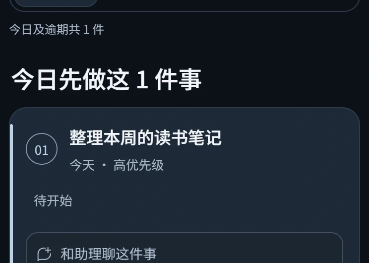
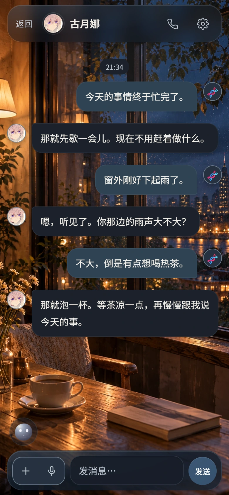
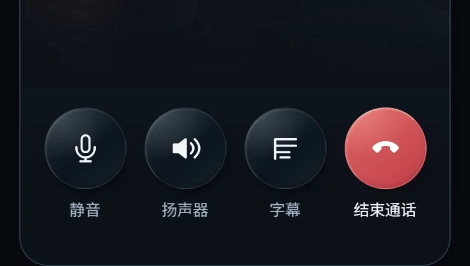
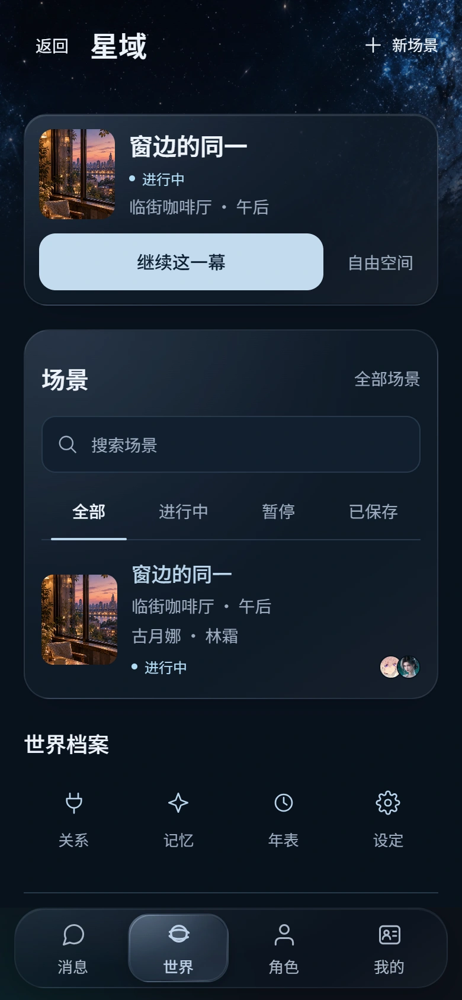
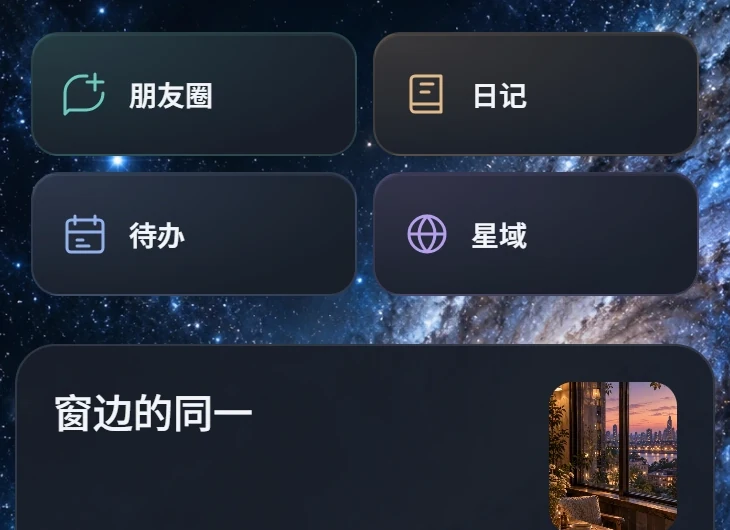
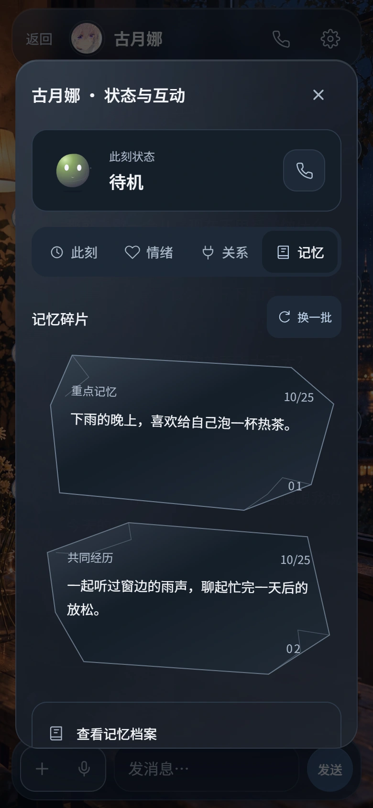
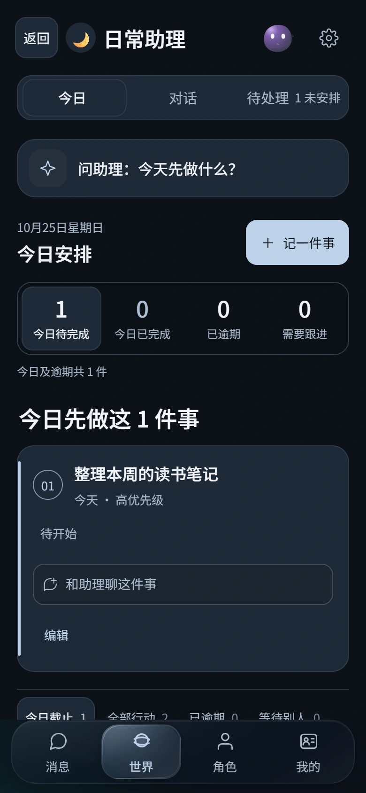

生活助理
打开助理，先看今天有哪些事要做。遇到待确认的事项，可以补充信息，再回来查看处理结果。

相处方式



下雨的晚上，
喜欢给自己
泡一杯热茶。
日常与世界
今日的待办先看清，值得留住的瞬间慢慢记。生活助理、日记、朋友圈与星域，让生活和故事各有位置。

打开助理，先看今天有哪些事要做。遇到待确认的事项，可以补充信息，再回来查看处理结果。

想留住今天的片段，就写篇日记。这里也能翻看朋友圈、打开待办清单，或接着上次的故事。
7.0.0 体验展示
来自 Android 实际组件，内容为示例。
选择画面可查看原图。



本页展示逢星 Android 7.0.0 的界面样例。录屏由你主动播放，演示过程为静音。
应用会按实际配置连接你选择的模型服务或可用网关。使用 AI 时，必要的输入、角色资料和相关上下文会发给对应服务；语音另需配置识别与合成服务，费用依服务商规则而定。
聊天、角色和记忆等资料以本机保存为主。你可以管理记忆，按应用提供的入口导出或删除资料。了解数据如何处理